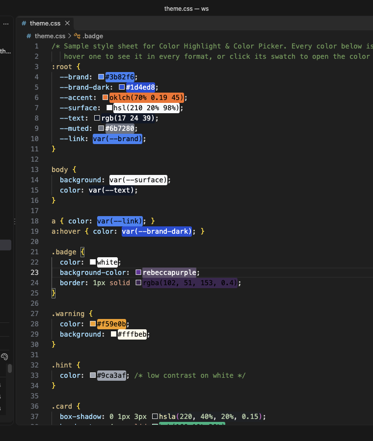

Open files in VS Code and Cursor / Code and APIs
See every color in your code on its own color in VS Code
Color Highlight & Color Picker shows every color in your code on its own color in VS Code: CSS, SCSS, LESS, HTML, JS and TS, Kotlin, Java, Dart and Swift. Hover a color to read it in HEX, RGB, HSL, HWB, OKLCH, Lab and the CSS name with its contrast on white and black, and click its swatch to change it with the color picker, which keeps your format. CSS, SCSS and LESS variables show the color they resolve to. All of that is free and offline. Zovo Pro (USD 19 once) adds a project palette with near-duplicate merging, bulk format conversion, a WCAG contrast audit and token export, with 3 free tries each.
Free, MIT license. Extension ID zovo.zovo-color-highlight, version 0.1.1. Needs VS Code 1.90.0 or newer.

Steps in VS Code
- Install Color Highlight & Color Picker from the Marketplace, or press Ctrl+P (Cmd+P on macOS) and run
ext install zovo.zovo-color-highlight. - Open any file. Colors are highlighted at once, with nothing to set up.
- Hover a color to read it in HEX, RGB, HSL, HWB, OKLCH, Lab and the CSS name, with the contrast ratio on white and black, and Copy and Replace links.
- Click the swatch to change the color with VS Code's color picker. Hex stays hex, and
0xAARRGGBBstays0xAARRGGBB. - Right-click a color and pick "Convert the Color at the Cursor..." or "Copy the Color at the Cursor As...". "Show the Colors of This File" lists every color of the file in the Explorer, with its line.
- Pick a style in
colorHighlight.style: background (default), underline, border, a dot before or after, or the text in its color.
Where Zovo Pro saves time
Highlighting every color format, the hover, the color picker, convert and copy, the Colors list and all six styles are free, with no account, no network requests and no telemetry. There is no trial timer and no license banner.
When a project has collected forty shades of almost the same blue, the Project Color Palette lists every color in the workspace with its use count, groups near duplicates (by OKLab distance), and merges a group into one color across all files with one click. The other Pro tools are Convert Color Formats in Bulk (a selection, a file or the workspace, as one undoable edit), a WCAG Contrast Audit of each CSS rule's text against its background with AA and AAA results, and Export Palette as Tokens: CSS custom properties, SCSS variables, a Tailwind theme or W3C design tokens JSON.
With Project Color Palette (Zovo Pro)
- Run "Color Highlight: Project Color Palette (Pro)" from the Command Palette, right-click a folder or style sheet in the Explorer and pick "Zovo Pro: Project color palette", or use the row at the top of the Colors list.
- Look through the colors with their use counts and the groups of near duplicates.
- Merge a group into one color. The change goes to every file that uses it. A try counts only when the tool produced its result.
Project Color Palette works 3 times on your computer before it asks for a license, and a try counts only when you get a result. Opening a file shows no popup and no countdown.
Zovo Pro costs USD 19 once. It is not a subscription, and it turns on the Pro tools in every Zovo extension, not only Color Highlight & Color Picker. After a card payment (Stripe) your license key shows on the next page. In VS Code, run "Zovo Pro: Enter Zovo Pro license key" from the Command Palette and paste it. The key is checked on your computer, with no network call. With GitHub Sponsors, pick the "$19 one time" tier, then run "Zovo Pro: I already paid: unlock with GitHub Sponsors" and sign in with the same GitHub account. With PayPal, send USD 19 with "Zovo Pro" in the note and the key comes by email within a day.
A team of 5: USD 59 once, by card or by PayPal. Every rule and every Pro tool is on the Zovo Pro page.
Steps in Cursor, Windsurf or VSCodium
- Open the Extensions view with Ctrl+Shift+X (Cmd+Shift+X on macOS).
- Search for
zovo.zovo-color-highlightand click Install. Cursor, Windsurf and VSCodium install from Open VSX, where it is published aszovo/zovo-color-highlight. - If your editor has no gallery, download the .vsix from the Open VSX page and run "Extensions: Install from VSIX...".
- Then use it the same way as in VS Code.
What Color Highlight & Color Picker handles
#rgb,#rrggbb,#rrggbbaa,rgb(),hsl(),hwb(),lab(),lch(),oklab(),oklch()and the 148 CSS color names, in old comma syntax and the new space syntax.- Android and Jetpack Compose
Color(0xFF6200EE)as 0xAARRGGBB, FlutterColor.fromARGBandColor.fromRGBO, SwiftUI and UIKitColor(red:green:blue:). var(--brand), SCSS$brandand LESS@brand, also when they are defined in another style sheet of the workspace.- Named colors only as values in style sheets by default, so the word red in a sentence stays plain (setting
colorHighlight.namedColors).
What it does not do
- Colors made with a function such as
darken($x, 10%),color-mix()orrgb(from ...)are not computed. lab(),lch(),oklab()andoklch()colors outside the sRGB range are shown clipped to sRGB, and the hover says so.- Tailwind class names such as
bg-blue-500are not highlighted. - Files over 3000 KB are not highlighted (setting
colorHighlight.maxFileSizeKB).
Other options
- Color Highlight (
naumovs.color-highlight, 9.8 million installs, on Open VSX). Its own description: "Highlight web colors in your editor". - Color Picker (
anseki.vscode-color, 2.4 million installs, on Open VSX). Its own description: "Helper with GUI to generate color codes such as CSS color notations." - The built-in color decorators. VS Code shows a small swatch and a picker for colors in CSS, SCSS and LESS files only, not in JS, Kotlin, Dart or Swift.
Install counts and Open VSX status were checked on 12 November 2026. Descriptions in quotes are the extensions' own.
Questions
Does VS Code highlight colors without an extension?
Partly. VS Code shows a small swatch and a color picker in CSS, SCSS and LESS files. It does not color the values themselves, and it shows nothing in JS, TS, Kotlin, Dart or Swift.
Why is my Android color wrong in other highlighters?
0xFF6200EE is alpha first (0xAARRGGBB). This extension reads 8-digit 0x numbers that way in Kotlin, Java and Dart (setting colorHighlight.argbLanguages).
Can it show the color of a CSS variable?
Yes. var(--brand), $brand and @brand show the color they resolve to, also when the variable is defined in another style sheet of the workspace.
Does it work in Cursor or Windsurf?
Yes. Cursor, Windsurf and VSCodium install extensions from Open VSX. Search for the extension in their Extensions view and install it there.
More about Color Highlight & Color Picker
Read the Color Highlight & Color Picker page for every feature and setting, or the source code on GitHub.
Related guides
- Open a SARIF file in VS Code
- Preview a Swagger or OpenAPI file in VS Code
- Preview an HTML file with its CSS and images in VS Code
- Test a regex in VS Code
Zovo Pro and support
Zovo Pro: USD 19 once, every Zovo viewer. It turns on the Pro tools in this extension and in the other Zovo extensions you use. The free features stay free.
After a card payment your license key shows on the next page. Paste it with the command "Zovo Pro: Enter a key".
You can also support the work with no Pro:
Need your format supported?
Open a format request with a sample file, and I reply there whether it can be done. For USD 299 once, through this GitHub Sponsors tier, I add your file format or a missing feature to this extension, with tests, within 7 days.